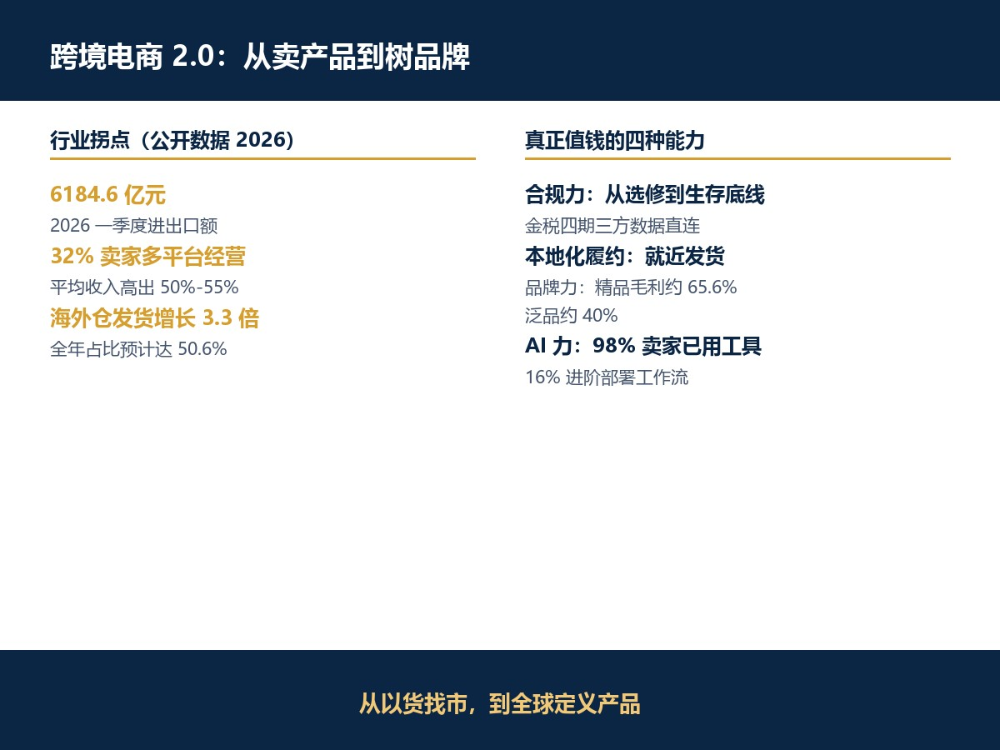

2026 年一季度，我国跨境电商进出口总额达 6184.6 亿元，其中出口 4735.5 亿元、进口 1449.1 亿元。规模仍在增长，但行业内部的竞争逻辑已经变了。中国贸促会研究院的判断是，跨境电商正从以国内为原点、输出高性价比白牌商品的 1.0 阶段，迈向以全球视角定义产品、按需生产、就近履约的"国际化 2.0"阶段。

一、事实层面：三个信号说明规则在变
第一个信号是多平台经营成为常态。派安盈数据显示，近 32% 的电商平台卖家同时经营多个平台或市场，其平均收入比单一平台卖家高出 50%—55%。单一平台的流量红利正在见顶，多市场布局成为抵御波动的基本动作。
第二个信号是履约方式的结构性反转。2026 年上半年海外仓发货量同比增长 3.3 倍，全年占比预计首次反超直邮、达到 50.6%。直邮单件税费 5—8 欧元，批量清关入海外仓仅 0.5—1 欧元，"就地发货、就近履约"正在从选项变成刚需。
第三个信号是 AI 改变流量入口。Adobe Analytics 数据显示，2026 年一季度生成式 AI 驱动的美国线上购物流量同比增长 393%，其引荐转化率比传统渠道高出 42%。当消费者从"搜索"转向"提问"，商品的发现逻辑被重写，超 98% 的中国卖家已在使用 AI 工具，16% 进阶到部署 AI 工作流。
二、第一个变化：合规从选修课变成生存底线
过去合规常被视为规模做大之后再补的功课，如今它已前置到选品和开发环节。金税四期实现平台、海关、税务三方数据直连，欧盟《数字服务法案》《包装和包装废弃物法规》以及美国的广告声明行政令，都大幅抬高了运营成本。产品合规、平台合规、税务合规与市场认证，任何一项缺失都可能让业务停摆。
对产业学院和出海服务平台的客户而言，这一变化意味着人才培养的口径要更新：报关、税务、认证、数据合规不再是可有可无的辅助知识，而是跨境电商岗位的核心能力。研究院在跨境电商板块推动的产教融合课程，正需要把这类合规能力写进教学标准。
三、第二个变化：本地化不是复制国内供应链
京东工业在泰国遇到过典型教训：本地物料不易获取、跨境履约无法满足时效、属地认证缺失。其复盘结论是，"复制国内供应链到海外"行不通，正确路径是"经营要本地化，但资源、禀赋和能力要全球化"——在目标市场注册公司、组建本地团队、建立本地仓储，同时背靠国内货盘与数字化供应链能力。
这解释了海外仓为什么快速增长，也解释了为什么平台正从交易撮合者转向整合物流、支付、营销、培训的一站式生态服务者。竞争的单位，已经从单个卖家变成整条本地化服务链。
四、第三个变化：品牌力决定利润能否守住
公开数据给出的毛利分化很说明问题：精品卖家毛利率约 65.6%，泛品约 40%，代工直供仅 20%—34%。品牌卖家能把成本上涨传导给消费者，铺货型卖家只能继续压价，而压价的尽头是利润归零。
硬科技、高客单价加上全球口碑的组合，正在成为样本。深圳一家企业推出的千美元以上智能庭院机器人在海外热销，说明硬科技与品牌底座融合后，中国制造完全可以在高价值区间站稳。从"卖产品"到"树品牌"，不是口号，而是能否穿越周期的分水岭。
五、趋势判断：生态红利时代的四个方向
其一，行业竞争将从流量红利、规模红利转向生态红利。技术底座、品牌底座、生态底座三者叠加，决定企业能否实现从产品出海向技术、标准、文化一体化输出的价值升维。单纯依靠性价比和平台流量的打法，空间会越来越小。
其二，"分布式库存＋按需生产"会成为主流履约形态。全球视角定义产品、在全球建立库存池实现就近履约，要求企业具备全链路可视化、智能预测与柔性调节能力。供应链从"能发货"升级为"可视、可测、可调"，是对数字化系统的硬性要求。
其三，AI 会从工具变成工作流。选品模型把人工几天的活压缩到一天，广告投放从小时级响应压到分钟级，合规风控从事后补救转为事前预防。真正的分水岭不是"用不用 AI"，而是"用得多深、是否嵌入了完整业务流程"。
其四，人才供给将成为产业集聚的关键变量。跨境电商运营、内容营销、跨境物流仓配、合规与本地化服务等岗位需求持续上升，懂业务、懂平台、懂合规的复合型人才稀缺。把企业岗位标准转化为课程与实训，是产业学院服务于出海产业带的现实抓手。
结语
6184.6 亿元的季度规模说明市场仍在扩容，但真正的竞争已经不在"能不能卖出去"，而在"能不能合规地、品牌化地、可持续地卖出去"。对服务出海企业与院校的研究机构来说，把合规、履约、品牌与 AI 四种能力沉淀为可复制的课程标准和服务体系，比追踪某个平台的短期红利更有价值。
本文所引数据来自公开报道与行业报告，相关分析为产业趋势研判，不构成投资或经营建议。